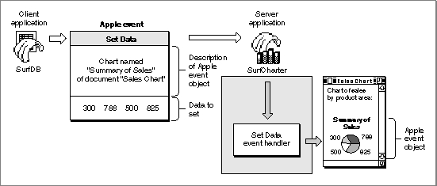

Legacy Document
Important: The information in this document is obsolete and should not be used for new development.
Important: The information in this document is obsolete and should not be used for new development.


Handling Apple Events
Figure 1-6 shows a common Apple event from the Core suite, the Set Data event. The SurfDB application is the client; it sends a Set Data event to the SurfCharter application. This event requests that SurfCharter use some new sales figures generated by SurfDB to update the data for the chart named "Summary of Sales" in the document named "Sales Chart." The Apple event contains information that identifies an action--setting data--and a description of the Apple event object on which to perform the action--"the chart named Summary of Sales in the document named Sales Report." The Apple event also includes the new data for the chart.
To respond appropriately, the SurfCharter application in Figure 1-6 can use the Apple Event Manager to determine what kind of Apple event has been sent and pass the event to the appropriate Apple event handler. An Apple event handler is an application-defined function that extracts pertinent data from an Apple event, performs the requested action, and returns a result. In this case, the Set Data event handler must locate an Apple event object--that is, the specified chart in the specified document--and change the data displayed in the chart as requested.
The Apple Event Manager provides routines that a server application can use in its Apple event handlers to take apart an Apple event and examine its contents. The SurfCharter application in Figure 1-6 can interpret the contents of the Set Data Apple event according to the definition of that event in the Apple Event Registry: Standard Suites. The Set Data event handler uses both Apple Event Manager routines and the SurfCharter application's own routines to locate the chart and make the requested change.
The Apple Event Manager also provides routines that a client application can use to construct and send an Apple event. However, the most important requirement for applications that support IAC is the ability to respond to Apple events, because this ability is essential for an application that users can control through scripts. The next section describes how you can use Apple events to support scripting in your application.
The chapter "Introduction to Apple Events" in this book provides an overview of Apple events and describes how you can use the Apple Event Manager to implement Apple events in your application. The chapters "Responding to Apple Events," "Creating and Sending Apple Events," "Resolving and Creating Object Specifier Records," and "Recording Apple Events" provide detailed information about the Apple Event Manager.